조경산업기사 (2018-03-04 기출문제)
1과목: 조경계획 및 설계
1. 앗시리아 제국에 조성된 사르곤 2세의 궁전 수렵원과 거리가 먼 것은?
- 인공호수
- 입구의 탑문(pylon)
- 인공언덕
- 향기나는 수목
(정답률: 70%)

2. 르네상스 시대의 이탈리아 정원(庭園) 의장이 가장 큰 특징은?
- 축경식(縮景式)
- 노단건축식(露壇建築式)
- 평면기하학식(平面幾何學式)
- 사실주의 풍경식(寫實主義 風景式)
(정답률: 86%)
3. 옥상정원의 기원이라고 할 수 있는 것은?
- 김나지움
- 아도니스 가든
- 페리스틸리움
- 파라디소
(정답률: 90%)
4. 중국 서호(西湖) 10경의 무대가 되는 곳과 거리가 먼 것은?
- 소주지방
- 백제(自堤)
- 소제(蘇堤)
- 소영주(小瀛洲)
(정답률: 62%)
5. 다음 일본의 정원양식 중 가장 늦게 나타난 양식은?
- 다정식
- 침전임천식
- 회유임천식
- 축산고산수식
(정답률: 81%)
6. 창덕궁 후원의 정자(亭子) 중 물에 뜬 것과 같은 부채꼴 모양으로 된 것은?
- 관람정
- 부용정
- 애련정
- 청의정
(정답률: 60%)
7. 15세기 후반부터 일본정원에서 바다 풍경을 상징적으로 묘사하기 위해 평면(平面)에 모래를 깔고 돌을 짜 맞추어(石組) 구성된 양식은?
- 축산식(築山式)
- 임천식(林泉式)
- 평정고산수(平定枯山水)
- 축산고산수(築山枯山水)
(정답률: 77%)
8. 인도 무굴정원의 가장 중요한 정원 요소는?
- 물
- 원정(園亭)
- 녹음수
- 화훼(花卉)
(정답률: 83%)
9. 다음 현황종합 분석도에서 화살표의 방향이 의미하는 것으로 가장 적합한 것은?
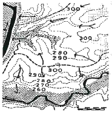
- 능선
- 스카이라인
- 물의 흐름
- 풍향
(정답률: 85%)
10. 동선계획을 구체화하는 과정에서 공간의 경험과 체험이 연속되도록 기능과 시설을 배치하고자 하는 것을 무엇이라 하는가?
- scale
- sequence
- contrast
- context
(정답률: 74%)
11. 비용편익분석(Consumer's Surplus)과 관련이 없는 용어는?
- 소비자 잉여(Consumer's Surplus)
- 비용-편익비(B/C Ratio)
- 순현재가치(Net Present Value)
- 수입(revenue)
(정답률: 71%)
12. 도시의 “오픈스페이스"의 기능으로 가장 거리가 먼 것은?
- 미기후 조절
- 도시 확산의 억제
- 재해의 방지
- 토지이용의 제고
(정답률: 58%)
13. 계획 설계 과정 중 법규검토, 제한성, 가능성, 프로그램 개발 등을 검토하고 결정하는 단계는 어느 단계인가?
- 용역발주
- 조사
- 분석
- 프로젝트 정의
(정답률: 78%)
14. 다음 중 대지의 조경과 관련한 설명 중 틀린 것은?
- 면적이 200제곱미터 이상인 대지에 건축을 하는 건축주는 해당 지방자치단체의 조례로 정하는 기준에 따라 조경이나 그 밖에 필요한 조치를 하여야 한다.
- 건축물의 옥상에 조정이나 그 밖에 필요한 조치를 하는 경우에는 옥상부분 조경면적의 3분의 2에 해당하는 면적을 조경면적으로 산정할 수 있다.
- 옥상조경의 경우 전체 조경면적의 100분의 50을 초과할 수 없다.
- 조경면적은 공개공지 면적으로 합산할 수 없다.
(정답률: 70%)
15. 그림과 같은 평면도에 대한 정면도로 가장 옳은 것은?
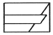
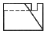
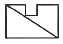
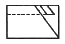
(정답률: 70%)
16. 제도용지 A3의 크기가 297mm×420mm이다. A2용지의 긴 변의 길이는 얼마인가?
- 420mm
- 594mm
- 841mm
- 1089mm
(정답률: 80%)
17. 다음 중 케빈 린치(Kevin Lynch)가 주장하는 도시경관의 요소는 무엇인가?
- 자연(natures), 통로(paths), 지구(districts), 결절점(nodes), 랜드마크(landmarks)
- 경계(edges), 통로(paths), 지구(bistricts), 결절점(nodes), 랜드마크(landmarks)
- 경계(edges), 연못(ponds), 지구(districts), 결절점(nodes), 랜드마크(landmarks)
- 경계(edges), 통로(paths), 지구(districts), 울타리(walls), 랜드마크(landmarks)
(정답률: 81%)
18. 다음 중 보색관계로 옳은 것은?
- 빨강 - 청록
- 노랑 - 보라
- 녹색 - 주황
- 파랑 - 연두
(정답률: 80%)
19. 고속도로 조경에서 안전운행을 위한 기능에 포함되지 않는 식재 유형은?
- 완충식재
- 지표식재
- 차광식재
- 시선유도식재
(정답률: 79%)
20. 다음 중 건축물의 특정한 층이 계획에서 정한 선의 수직면을 넘어 돌출하여 건축할 수 없는 것으로, 보행공간이나 공동주차통로 등의 확보가 필요한 곳에 지정하는 것은?
- 건축지정선
- 건축한계선
- 벽면지정선
- 벽면한계선
(정답률: 62%)
2과목: 조경식재
21. 다음 중 자유식재의 패턴에 해당되지 않는 것은?
- 루버형
- 번개형
- 선형
- 절선형
(정답률: 69%)
22. 다음 중 꽃 색깔이 다른 수종은?
- 조팝나무
- 국수나무
- 층층나무
- 생강나무
(정답률: 74%)
23. 으름덩굴(Akebia quinata)의 설명으로 틀린 것은?
- 개화 시기는 7월이다.
- 가지에 털이 없으며 갈색이다.
- 음수이나 양지에서도 잘 자란다.
- 형태는 낙엽활엽덩굴식물이다.
(정답률: 50%)
24. 우리나라 온대지방의 계절 특성상 녹음수로 가장 적합한 것은?
- Forsythia koreana
- Celtis sinensis
- Pinus koraiensis
- Photinia glabra
(정답률: 57%)
25. 조경설계기준상 산업단지 및 공업지역의 완충 녹지 설명 중 틀린 것은?
- 주택지와 접한 공업지역의 경우 완충녹지의 폭은 30m 이상이어야 한다.
- 공업지역과 주택지역 사이에 설치되는 완충 녹지의 폭은 100m 정도로 한다.
- 경관조경수를 주 수종으로 도입하며, 대기오염에 강한 낙엽수를 수림지대 주변부에 두고, 그 중심에 속성 녹화 경관수목을 배식한다.
- 녹지의 폭원은 최소 50~200m 정도를 표준으로 하되 당해 지역의 특성과 인접 토지이용과의 관계, 풍향, 기후, 사회적·자연적 조건 등을 고려하여 적절한 폭과 길이를 결정한다.
(정답률: 65%)
26. 서울 숲을 생태공원으로 재조성하고자 할 때 동해를 받을 우려가 있어 식재가 힘든 수종은?
- 소나무
- 서어나무
- 종가시나무
- 갈참나무
(정답률: 60%)
27. 녹도(green way)에 대한 설명으로 틀린 것은?
- 자전거 통행을 고려하여 안전시거를 확보한다.
- 수목의 지하고는 2.5m 이상이 되도록 한다.
- 향토수종을 식재하고, 기존 수목을 최대한 활용하며 식생구조는 다층형으로 식재한다.
- 보행녹도의 폭은 최소 4m 이상의 폭원을 확보하며 수목식재 및 휴게공간을 설치한다.
(정답률: 54%)
28. 비탈면 녹화(잔디, 수목식재)에 관한 설명으로 틀린 것은?
- 덩굴식재 시 식혈의 크기는 직경 30cm, 깊이 30cm로 한다.
- 잔디고정은 떼꽂이를 사용하여 잔디 1매당 2개 이상 견실하게 고정한다.
- 잔디생육에 적합한 토양의 비탈면경사가 1:1보다 완만할 때에는 흙이 붙어 있는 재배된 잔디를 사용한다.
- 비탈면 줄떼다지기는 잔디폭이 10cm 이상으로 하고, 비탈면에 25cm 이내 간격으로 수평골을 과서 수평으로 심고 다짐을 철저히 한다.
(정답률: 56%)
29. 수목의 식재로 얻을 수 있는 기능 중 기상학적 효과는?
- 반사조절
- 대기정화 작용
- 토양 침식조절
- 태양 복사열 조절
(정답률: 67%)
30. 미루나무(Papulus deltoides)의 특성으로 틀린 것은?
- 수고 30m, 지름 1m 정도로 자란다.
- 종자로 번식시키고 있으나 대부분 삽목에 의한다.
- 하천변이나 습윤 비옥한 계곡지역이 식재 적지이다.
- 꽃은 6~7월에 피고 꼬리모양꽃차례로서 암수한그루이다.
(정답률: 58%)
31. 겨울에 낙엽이 지는 수종은?
- 광나무(Ligustrum japonicum)
- 가시나무(Quercus myrsinaefolia)
- 낙우송(Taxodium distichum)
- 굴거리나무(Daphniphyllum macropodum)
(정답률: 72%)
32. 다음 설명의 ㉠, ㉡에 적합한 용어는?
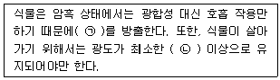
- ㉠：O2, ㉡：광포화점
- ㉠：O2, ㉡：광보상점
- ㉠：CO2, ㉡：광보상점
- ㉠：CO2, ㉡：광포화점
(정답률: 76%)
33. 건물, 담장, 울타리를 배경으로 하여 앞쪽에 장방형으로 길게 만들어져 한쪽에서만 바라 볼 수 있는 화단은?
- 경재화단(border flower bed)
- 리본화단(ribbon flower bed)
- 포석화단(pared flower bed)
- 카펫화단(carpet lower bed)
(정답률: 70%)
34. 녹음용 수목의 조건으로 적합하지 않은 것은?
- 낙엽활엽수가 바람직하다.
- 수관폭이 가능한 넓어야 한다.
- 답압에 견딜 수 있어야 한다.
- 지하고가 낮은 종을 우선으로 한다.
(정답률: 83%)
35. 하천 내 조사한 식물종 리스트 중 자생종인 것은?
- 호밀풀
- 말냉이
- 개망초
- 마디꽃
(정답률: 42%)
36. 다음 중 다공질 경량토(多孔質輕量土)에 해당하지 않는 것은?
- 펄라이트(pearlite)
- 화산(火山) 모래
- 생명토(生命土)
- 버미큘라이트(vermiculite)
(정답률: 67%)
37. 다음 보기가 설명하는 수종은?
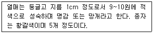
- 인동덩굴
- 광나무
- 청미래덩굴
- 송악
(정답률: 51%)
38. 식물 명명의 기본원칙에 해당되지 않은 것은?
- 분류군의 학명은 선취권에 따른다.
- 규약은 대부분 소급 적용할 수 없다.
- 분류군의 학명은 표본의 명명기본이 된다.
- 각 분류군은 오직 하나의 이름만을 가진다.
(정답률: 60%)
39. 다음 설명의 ㉮, ㉯에 알맞은 용어는?
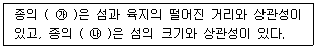
- ㉮사멸률, ㉯생존율
- ㉮생존율, ㉯사멸률
- ㉮유출률, ㉯유입률
- ㉮유입률, ㉯유출률
(정답률: 64%)
40. 원형 또는 타원형의 수형을 갖는 수종은?
- 동백나무
- 느티나무
- 배롱나무
- 삼나무
(정답률: 58%)
3과목: 조경시공
41. 플라스틱의 특성에 관한 설명 중 옳지 않은 것은?
- 내식성이 우수하다.
- 약알칼리에 약하다.
- 일반적으로 비흡수성이다.
- 화학약품에 대한 저항성은 열경화성 수지와 열가소성수지가 다른 특성을 갖고 있다.
(정답률: 64%)
42. 안전율을 고려하여 허용응력을 구조재의 최고 강도보다 상당히 적게 하는 이유로 틀린 것은?
- 재료가 부식하거나 통화하여 부재단면이 감소할 수 있다.
- 구조계산과정에서 발생하는 계산 착오를 고려한 것이다.
- 구조재료의 성질이 반드시 같지 않으며, 내부결함이 있을 수 있다.
- 구조재료의 강도는 하중이 정적 또는 동적으로 작용하는가에 따라 큰 차이가 있다.
(정답률: 81%)
43. 하수도 배수체계에서 합류식의 장점이 아닌 것은?
- 비용이 적게 든다.
- 침전물이 생기지 않는다.
- 관리가 용이하다.
- 관 내부의 환기가 용이하다.
(정답률: 72%)
44. 다음 중 조경공사 표준시방서상의 설계변경 조건에 해당되는 것은?
- 가식장 이동 시
- 현장 사무실 위치 이동 시
- 공사시행 중 발주자의 방침 변경 시
- 재료보관 창고 설치 방법 변경 시
(정답률: 73%)
45. 조경공사의 견적시 수량계산에 관한 사항 중 틀린 것은?
- 절토량은 자연상태의 설계도의 양으로 한다.
- 수량은 C.G.S 단위와 척, 관 단위를 병행함을 원칙으로 한다.
- 볼트의 구멍부분은 구조물의 수량계산에서 공제하지 아니한다.
- 면적의 계산 중 구적기(Planimeter)를 사용하는 경우 3회 이상 측정하여 그 중 정확하다고 생각되는 평균값으로 정한다.
(정답률: 57%)
46. 건설공사의 입찰방식에 따른 분류에 해당하지 않는 것은?
- 공개경쟁입찰
- 제한경쟁입찰
- 공동입찰
- 특명입찰
(정답률: 53%)
47. 다음 대표적인 범주의 표준화(산업규격) 예로 틀린 것은?
- 영국 - ES(England standards)
- 일본 - JIS(Japan Industrial Standards)
- 국제표준화규격 – ISO(International Standard Organization)
- 유럽연합 - EN(European Norm)
(정답률: 67%)
48. 주차공간의 폭이 넓어 충분한 여유가 있을 경우 설치가 가능하며, 동일 면적에 가장 많은 주차를 할 수 있는 주차배치 방법은?
- 30°주차
- 45°주차
- 60°주차
- 90°주차
(정답률: 73%)
49. 입찰·견적·계약용 적산의 올바른 진행과정은?
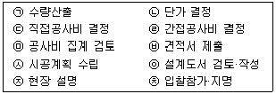
- ㉩→㉨→㉧→㉣→㉢→㉡→㉠→㉤→㉦→㉥
- ㉩→㉨→㉧→㉠→㉦→㉡→㉢→㉣→㉤→㉥
- ㉩→㉨→㉧→㉡→㉠→㉦→㉢→㉣→㉤→㉥
- ㉩→㉨→㉧→㉦→㉠→㉡→㉢→㉣→㉤→㉥
(정답률: 49%)
50. 다음 공정표의 전체 소요 공기(工期)는?
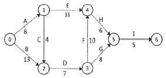
- 30일
- 40일
- 41일
- 42일
(정답률: 86%)
51. 주요 조경자재 중 굳지 않은 콘크리트(레디믹스트 콘크리트)의 품질관리시험 항목으로 옳은 것은?
- 흡수율
- 휨강도
- 인장강도
- 압축강도
(정답률: 52%)
52. 다음 조경공사의 표준품셈 설명 중 ( )안에 알맞은 수치는?
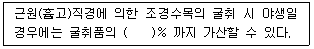
- 3
- 5
- 10
- 20
(정답률: 68%)
53. 골재의 단위용적 중량을 계산할 때 골재는 어느 상태를 기준으로 하는가? (단, 굵은 골재가 아닌 경우이다.)
- 습윤상태
- 기건상태
- 절대건조상태
- 표면건조내부포화상태
(정답률: 50%)
54. 경사면에 따라 거리를 측정하여 다음 그림과 같았다. 이 때의 AC의 수평거리를 구한 값은?
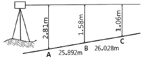
- 50.590m
- 51.890m
- 50.188m
- 51.188m
(정답률: 52%)
55. 건설부분의 재료 중 일반적인 추정 단위중량이 틀린 것은? (단, 건설공사 표준품셈상의 조건은 자연상태 또는 건재 등을 알맞게 적용)
- 암석(화강암) ： 2600~2700kg/m3
- 자갈(건조) ： 1600~1800kg/m3
- 모래(습기) ： 1700~1800kg/m3
- 소나무(적송) ： 1800~2400kg/m3
(정답률: 62%)
56. 축적 1 : 200과 축척 1 : 600에서 1변이 3cm인 정사각형의 실제 면적 비는?
- 1 : 3
- 1 : 6
- 1 : 9
- 1 : 12
(정답률: 70%)
57. 보행자 전용 도로의 설명 중( )안에 알맞은 숫자는?
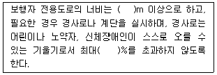
- 1.0, 10
- 1.5, 8
- 2.0, 10
- 2.5, 8
(정답률: 66%)
58. 공사비의 산출 시 금액의 단위표준이 맞는 것은?
- 설계서의 총액：100원 이하 버림
- 설계서의 소계：10원 미만 버림
- 설계서의 금액란：1원 미만 버림
- 일위대가표의 금액란：0.1원 단위 반올림
(정답률: 66%)
59. 흙의 수분함량에 따른 상태변화에 대한 설명 중 틀린 것은?
- 수분함량에 따라 유동성, 가소성, 이쇄성, 강성을 갖는다.
- 소성상한과 소성하한 사이의 차를 소성지수라고 한다.
- 수분함량에 따른 토양의 상태변화를 견지성이라 한다.
- 가소성을 나타내는 최대수분을 소성하한, 최소수분을 소성상한이라 한다.
(정답률: 68%)
60. 지상에 있는 임의 정의 표고를 숫자로 도상에 나타내는 지형의 표시방법은?
- 점고법
- 등고선법
- 채색법
- 우모법
(정답률: 69%)
4과목: 조경관리
61. 다음 설명과 같이 식재선정 및 관리에 주의해야 하는 수종은?
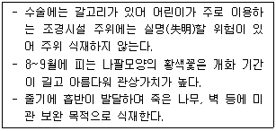
- 마삭줄
- 등수국
- 인동덩굴
- 능소화
(정답률: 72%)
62. 잡초의 종합적 방제법(integrated control)에 대한 설명으로 틀린 것은?
- 제초제 약해와 환경오염을 줄일 수 있다.
- 여러 가지 다른 방제법을 상호 협력적으로 적용하는 방식이다.
- 잡초군락의 크기는 감소하고, 작물의 생산력이 증대되는 효과가 있다.
- 화학적 방제를 배제하고, 생태적 방제와 예방적 방제를 주로 사용한다.
(정답률: 63%)
63. 일반적인 잔디 깎기 요령에 관한 설명으로 가장 올바른 것은?
- 버뮤다 그라스는 여름보다는 가을에 집중적으로 깎아 준다.
- 벤트 그라스는 봄보다 여름에 자주 깎는다.
- 잔디의 맹아성을 고려하여 키가 큰 잔디는 한 번에 원하는 위치까지 깎는 것이 효과적이다.
- 잔디깎는 횟수와 높이할 규칙적으로 일정하게 하는 것이 좋다.
(정답률: 67%)
64. 식물(기주)이 병에 견디는 힘이 약해 병에 쉽게 걸리는 성질을 나타내는 용어는?
- 내병성
- 이병성
- 면역성
- 비기주 저항성
(정답률: 52%)
65. 조경시설의 유지관리에 있어서 행정사항으로 가장 거리가 먼 것은?
- 안전교육의 실시 여부
- 공정진행 사항의 기록 보존 여부
- 반입자재에 대한 품질의 적합 여부
- 기술지도 및 기타 지시사항 이행 상태
(정답률: 52%)
66. 수중펌프 및 수중등을 연못에 설치하고 관리시의 보완 대책으로 적당하지 않은 것은?
- 누전차단기를 반드시 설치한다.
- 과부하 보호장치를 설치한다.
- 연못 물을 항상 일정하게 유지하기 위해 수위 조절기를 설치한다.
- 간단한 조작을 위하여 커버나이프 스위치에 직렬로 연결 사용한다.
(정답률: 83%)
67. 레크레이션 공간의 관리에 있어서 가장 이상적인 관리전략은?
- 폐쇄 후 육성관리
- 폐쇄 후 자연회복형
- 순환식 개방에 의한 휴식기간 확보
- 계속적인 개방ㆍ이용상태 하에서 육성관리
(정답률: 70%)
68. 관리예산 책정 시 작업률이 1/4이라면 이것이 의미하는 것은?
- 4년에 1회 작업을 한다.
- 분기별로 1회 작업을 한다.
- 작업시 1/4명이 참가한다.
- 작업당 소요시간이 1/4이다.
(정답률: 69%)
69. 가로수에 유공관(有孔管, perforated pipe)을 설치하여 얻고자 하는 효과로 옳은 것은?
- 통기성 및 관수의 효율성을 높인다.
- 다양한 디자인으로 경관을 개선한다.
- 통행인으로 인한 답압을 줄인다.
- 가로변 쓰레기와 먼지를 흘려보낸다.
(정답률: 77%)
70. 유희시설의 유치관리에 관한 설명으로 틀린 것은?
- 철재 유희시설은 방청처리를 해야 하며 가급적 스테인리스를 사용한다.
- 파손시설은 보호조치를 취하고 이용할 수 없는 시설을 방치해서는 아니 된다.
- 바닥모래는 어린이의 안전을 위하여 최대한 가는 모래를 사용한다.
- 놀이터 내에는 물이 고이지 않게 하고 항상 모래 면을 평탄하게 한다.
(정답률: 70%)
71. 적심(摘心)에 관한 설명으로 가장 적합한 것은?
- 상록성 관목류의 전정을 통칭하는 뜻이다.
- 토피아리 전정의 한 방법이다.
- 꽃눈 조절을 위한 과수의 전정방법이다.
- 새로 나온 연한 순을 자르는 것이다.
(정답률: 64%)
72. 질소(N) 성분의 결핍현상 설명으로, 가장 거리가 먼 것은?
- 활엽수의 경우 황록색으로 변색된다.
- 침엽수의 경우 잎이 짧고 황색을 띤다.
- 눈(shoot)의 크기는 지름이 다소 짧아지고 작아진다.
- 조기에 낙엽이 되거나 잎이 부서지기 쉽다.
(정답률: 55%)
73. 80%의 A수화제 원액을 0.02%로 희석하여 20L의 용액을 만들려면 A수화제의 원액은 얼마가 필요한가?
- 2cc
- 4cc
- 5cc
- 8cc
(정답률: 40%)
74. 초화류 관수(灌水)시 일반적으로 유의하여야 할 점으로 틀린 것은?
- 여름의 관수는 직사일광이 강한 정오 전후의 시간대는 가능한 한 피한다.
- 관수는 충분한 양의 물을 주되 겉흙이 말랐을 때 하는 것이 좋다.
- 관수는 소량의 물을 매일 주는 것이 가장 효과적이다.
- 관수는 시간을 두고 토양 깊숙이 침투할 정도로 실시하고, 지표면에 물이 고이지 않을 정도로 하여야 한다.
(정답률: 72%)
75. 목재의 벤치나 야외탁자에서 재료의 단점이 아닌 것은?
- 파손되기 쉽다.
- 기온에 민감하다.
- 습기에 약하며 썩기 쉽다.
- 병해충의 피해를 받기 쉽다.
(정답률: 68%)
76. 참나무 시들음병의 매개충은?
- 바구미
- 광릉긴나무좀
- 솔수염하늘소
- 오리나무잎벌레
(정답률: 75%)
77. 식재한 수목의 뿌리분 위쪽 둘레에 짚, 낙엽 등이 피복 목적으로 가장 거리가 먼 것은?
- 유기질 비료 제공
- 병해충 발생
- 표토의 굳어짐을 방지
- 잡초 발생 억제
(정답률: 73%)
78. 진딧물의 천적에 속하지 않는 것은?
- 기생벌류
- 나방류
- 무당벌레류
- 풀잠자리류
(정답률: 65%)
79. 종자와 비료, 흙을 혼합하여 네트(Net)에 넣고, 비탈면의 수평으로 판 골속에 넣어 붙이는 공법은?
- 식생구멍공
- 식생판공
- 식생자루공
- 식생매트(mat)공
(정답률: 56%)
80. 다음은 포장의 결함에 의해 발생되는 파손 형태 모식도이다. 침하(沈下)현상의 모식도를 표현한 것은?
(정답률: 83%)